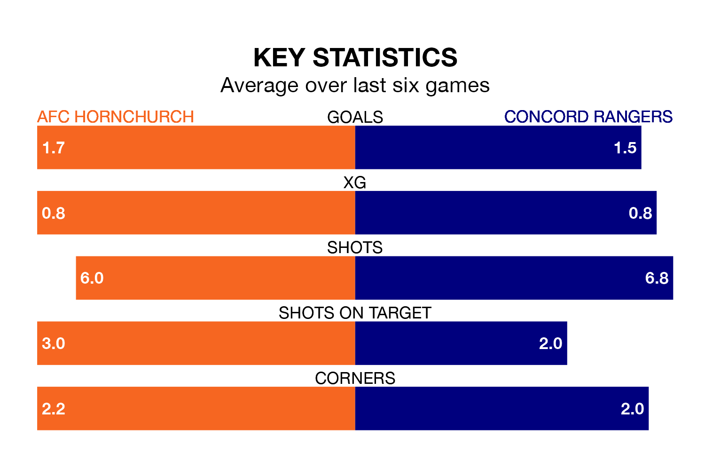

Mid-season relegation candidates Concord Rangers face a challenge away against high-flying AFC Hornchurch at the Hornchurch Stadium on Saturday.
Concord Rangers are rooted to the bottom of the Isthmian Premier Division table, and have picked up three wins and three draws in their 18 games to date.
Hornchurch, meanwhile, are top of the standings with 55 points, having won 16 and drawn seven of their first 24 matches.
With 60 goals in 24 games so far this season, Hornchurch are the league's highest scorers with 2.5 goals per game. And they are conceding fewer than average, letting in 20 goals at a rate of 0.8 per game.
Concord, meanwhile, are below average scorers, with 0.9 goals per game, compared to a league average of 1.6. They have conceded 2.1 goals per game.
The hosts are in mixed form in Isthmian Premier Division, with two wins and four draws from their last six games.
With a win and three draws over that period, Rangers's form is worse – they have taken six points from 18, compared to Hornchurch's 10.
Hornchurch's last match was on Tuesday, a 1-1 draw against Billericay Town.
Concord drew 1-1 with Margate last time out, on January 13.
Updated: 13:09 (UTC), 17/01/24